生成式 AI 作品集：用 CLAUDE.md 讓 AI 接手「每週新增一頁」
你正在看的這個網站，就是第 9 堂的作業。我把網站的規則寫成一份給 AI 看的「員工手冊」CLAUDE.md，之後只要開新對話說一句「新增第 N 堂」，AI 就會照同一套規則，把新一堂的作業整理成一頁。
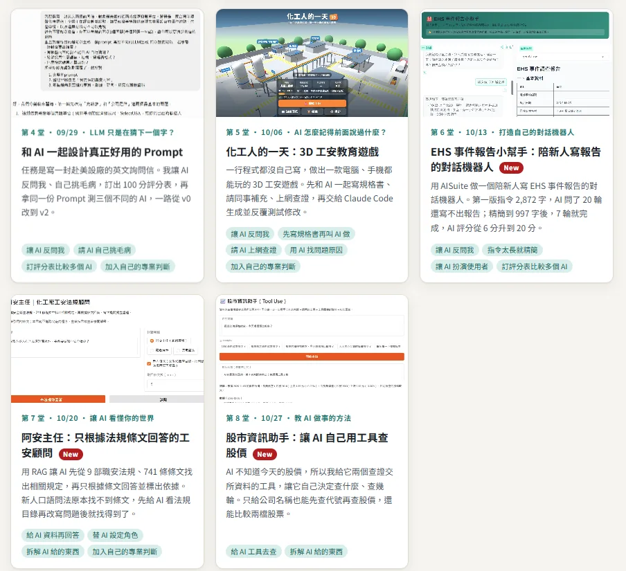
想解決的問題
同事知道 AI 很紅，卻不知道「不會寫程式的人」能拿 AI 做什麼。課程每週都有新作業，網站會一直長大，需要一套能重複使用的做法。
AI 怎麼幫忙
整個過程用 Claude Code。每次發現 AI 做得不對，我就請它把修正寫進 CLAUDE.md，下次自動生成時就不會再犯。
成果
開新對話只說一句話，AI 就做出第 6～8 堂三頁格式正確的作品頁；測出的缺陷也補成了新規則。
01先搞懂 CLAUDE.md：寫給 AI 的員工手冊
這堂課的主角是 CLAUDE.md。它不是一個 App，而是放在專案資料夾裡的一份文字檔，讓 AI 每次上工前先讀。第 9 堂講義把它比喻成「員工手冊」。
因為把工作「交辦」給 AI 時，它每次都從零開始
第 9 堂講義的主題是「換你當老闆」：從「問 AI」變成「交辦一件工作給 AI」，AI 不再只是顧問，而像員工一樣自己做完多個步驟，交出一份成品。但專案如果一直在同一個對話裡進行，對話會越來越長，換一台電腦也讀不到；開新對話，AI 又什麼都不記得。講義說，好老闆通常要說清楚三件事：要什麼成品、怎麼算做完、有什麼限制，重點就是「不要讓 AI 猜」。
所以把這三件事寫成手冊，讓 AI 上工前先讀
講義的公式是 AI Agent ＝ AI 模型（大腦）＋ Harness（工作裝備）：模型負責想，工作裝備負責讓它真的能讀檔、改檔、執行。規則檔就是工作裝備的一部分，Claude 用的叫 CLAUDE.md，一般通用的叫 AGENTS.md。在我的作品集裡，它是這樣運作的：
但手冊沒寫到的，AI 就不會做，所以要邊用邊改
新視窗測試時，格式全部正確，但第 7 堂的 RAG、第 8 堂的 Tool Use 都沒講清楚，原因就是規則沒寫到。講義也說：不用擔心沒有寫完美，可以持續改寫，而且這種規格書是由我們和 AI 一起討論出來的。
一般人不用寫程式，也能替自己的 AI 寫一本手冊
CLAUDE.md 是 Claude Code 這類會自己動手的 AI 工具會讀的檔案；講義也提到，不一定要叫這個名字，也可以直接跟 AI 說「先讀指定的員工手冊」。下次把一件重複的工作交給 AI 時，可以先問自己：要什麼成品、怎麼算做完、哪些不能動，我都寫清楚了嗎？
02過程
- Claude Code：會自己讀檔、改檔、執行指令的 AI，我用自然語言描述需求，它把網站做出來。
- CLAUDE.md：放在專案資料夾裡、給 AI 看的規則檔，AI 每次開工前會先讀。
- 新視窗（新對話）：一個全新的對話，AI 沒看過之前的任何討論，只能靠 CLAUDE.md 了解專案。
- 子代理：AI 把工作拆開，分派給幾個「小幫手」同時做，例如三個小幫手各做一頁。
- GitHub Pages：免費把網頁放上網路的服務，這個網站就放在上面。
整個過程我都用 Claude Code。重點不是一次寫好規則，而是每次發現 AI 做得不對，就把修正寫進 CLAUDE.md，讓下一次自動生成時不會再犯。
第一階段：先讓 AI 反問我
-
不直接叫 AI 做網站，先交代資料在哪、請它反問 3 個問題
我先說明網站用途和每堂作業的資料位置，並規定只看 eeclass 提交內容和裡面的雲端連結，不讀本機的其他版本。AI 先整理了第 1～5 堂作業，再反問我：個資怎麼處理、要寫多詳細、GitHub 和風格怎麼安排。
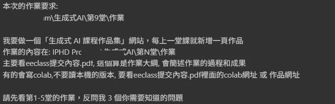
我的開場指令：說明網站用途、資料位置，以及「只看 eeclass 提交內容和雲端連結」 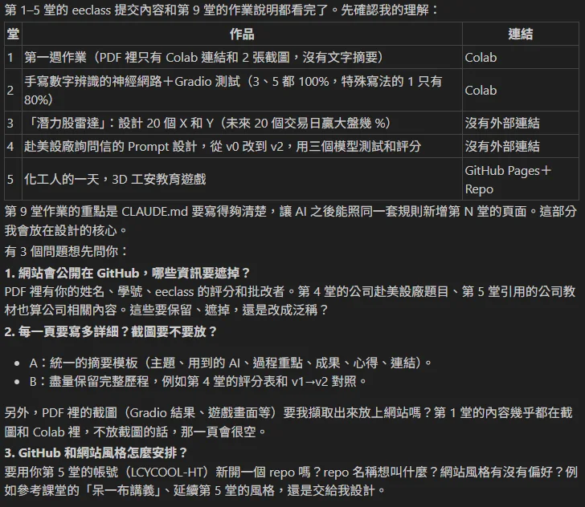
AI 先整理第 1～5 堂作業，再反問我 3 個問題 -
我的回答，後來都變成了規則
個資一律不放（第 3 節）、可以放截圖（第 8 節）、讀者是公司同事（第 1 節）。其中「這個網站是給公司同事看的」，是整份 CLAUDE.md 最重要的一句，後面所有寫法都由它決定。
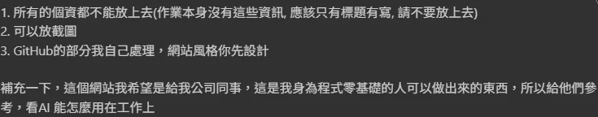
我的回答：確定讀者是「公司同事」 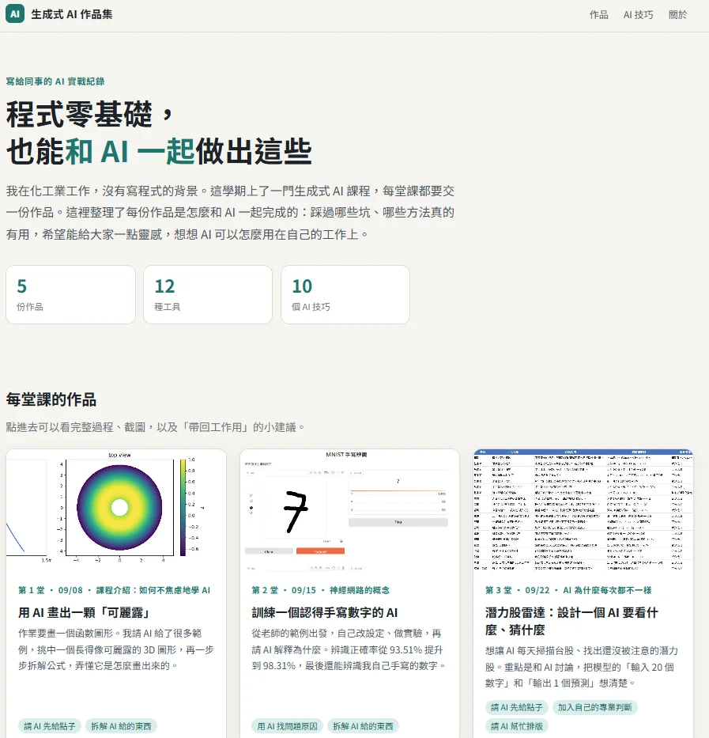
AI 做出的第一版首頁，做得很快，但還有很多地方要從同事的角度調整
第二階段：五個關鍵決定，每個都寫進 CLAUDE.md
第一版做得很快，但我從「同事會怎麼看」的角度檢查，做了五個關鍵決定：
| 決定 | 我發現的問題 → 怎麼改 | 寫進 CLAUDE.md |
|---|---|---|
| ① 拿掉膨風內容 | AI 列出「12 種工具、10 個 AI 技巧」，看起來很多，但同事沒上課也用不了 → 拿掉統計數字和工具總覽 | 第 9.5 節：首頁只有三區，不加統計數字 |
| ② 工具名稱講白話 | gpt-oss-120b、Gradio 對同事很陌生 → 聊天 AI 統稱「AI 聊天助手」，程式套件和 Excel 不列 | 第 9 節：工具標籤規則 |
| ③ 新手工具入門 | 同事需要知道「從哪裡開始」→ 5 個工具各一頁，要國中生看得懂、幾分鐘讀完 | 第 9.6 節：新工具「值得寫」的 5 項標準 |
| ④ 一頁講一件事 | Claude Code 頁像在講三件不相干的事 → 改成一條故事線 | 第 9.6 節：寫作原則＋修改前後對照 |
| ⑤ New 標記 | 為了驗收開新視窗的測試 → AI 照規則新增的內容一律標 New | 第 1.5 節 |
-
決定①②：從同事的角度刪減
AI 第一版的工具總覽列了 12 種工具。我判斷這有膨風的嫌疑，對同事也沒有幫助，決定拿掉。接著請 AI 分類「一般人免費就能用的工具」，再依結果把工具標籤改成同事看得懂的名稱。
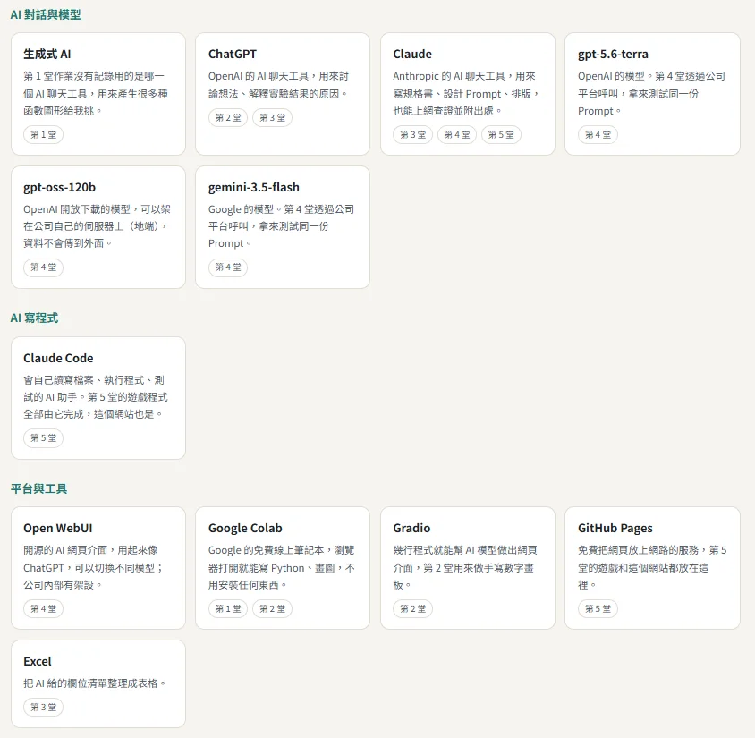
AI 第一版的工具總覽：12 種工具，看起來很多，但同事沒上課也用不了 -
決定③：新手工具入門，並請 AI 定義什麼工具「值得寫」
我定了每個工具頁的重點：國中生看得懂、不能長篇大論。我也想到：之後用到新工具時，AI 怎麼知道要不要寫一頁？所以請它定義「值得寫」，寫成 5 項標準，之後新增作品時 AI 會自己判斷。
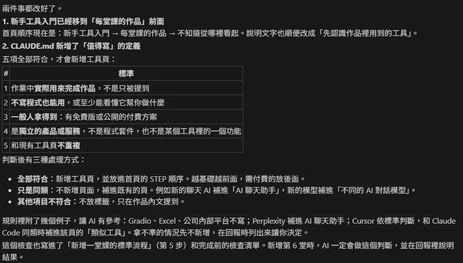
寫進 CLAUDE.md 的「值得寫」5 項標準，以及判斷後的三種處理方式 -
決定④：一頁講一件事，我自己改寫定義當範例
Claude Code 頁原本把「什麼是 AI Agent？」「什麼是 Vibe Coding？」並列，讀起來像三件不相干的事。我提出問題後，AI 改成一條故事線：Claude Code 是 AI Agent → 它會自己動手 → 所以我們可以用 Vibe Coding 的方式開發。
AI 寫的定義還是不夠準確，所以我自己改寫了 Claude Code 的定義，再要求它把這次修改的邏輯寫進 CLAUDE.md，附上修改前後對照，讓之後的 AI 有例子可以照著做。
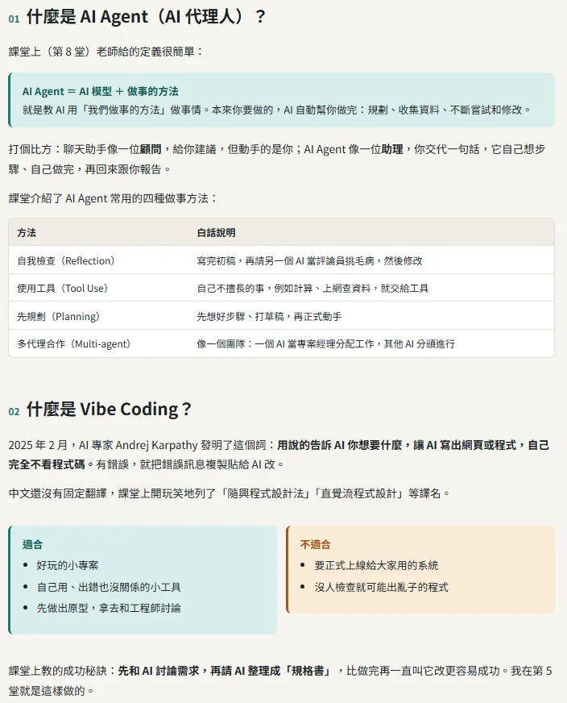
修改前：兩個「什麼是…？」並列，讀起來像不相干的事 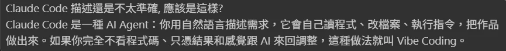
我自己改寫的定義，後來直接成為 CLAUDE.md 裡的範例 -
決定⑤：為新視窗測試準備 New 標記
我想比對「和 AI 一起調整的內容」和「AI 自己讀 CLAUDE.md 生成的內容」，所以加了 New 標記規則：AI 照規則新增的頁面、段落一律標 New，而且不能自己移除。
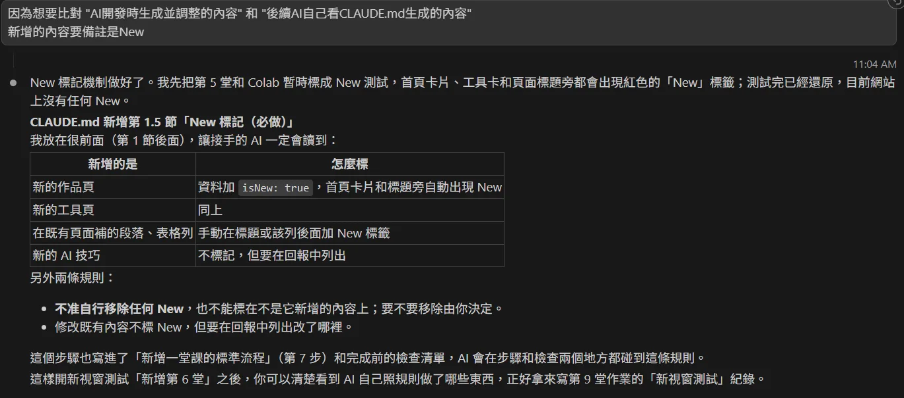
AI 把 New 標記寫成 CLAUDE.md 第 1.5 節，放在最前面，接手的 AI 一定會讀到
第三階段：開新視窗測試，測出缺陷就補規則
-
開一個全新的對話，只說一句「新增第 6,7,8 堂」
照老師教的方法，我開了一個全新的對話，AI 沒看過之前的任何討論，我也不多做說明。AI 讀完 CLAUDE.md 後，自己分派三個子代理，同時做第 6、7、8 堂，也主動說明第 7、8 堂的日期是推算的。
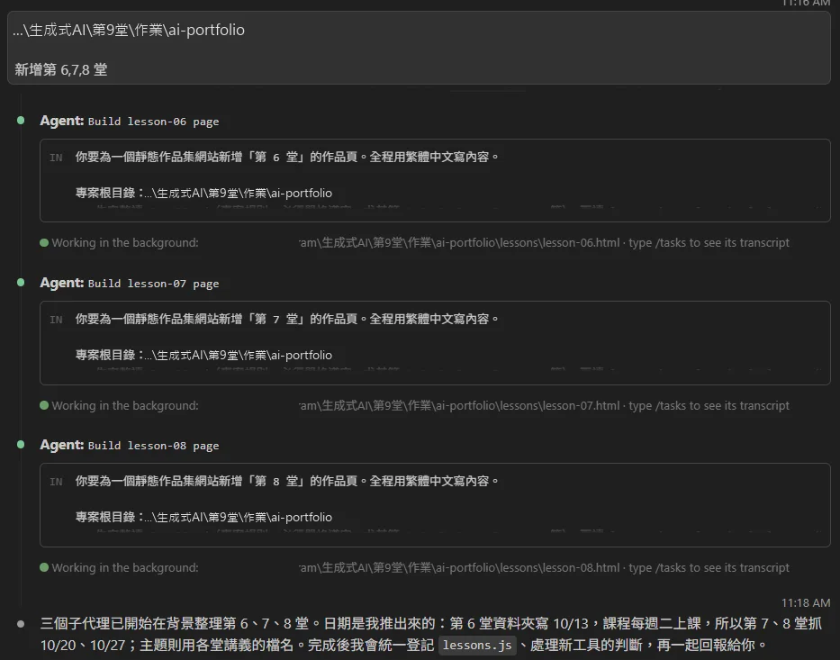
新視窗裡只有一句話，AI 自己分派三個子代理同時做三頁 做完後，首頁多了三張作品卡片，都自動標上紅色 New。AI 也依「值得寫」標準判斷：新模型屬於同類，補進既有的工具頁，而不是另開新頁，補的段落也都標了 New。
-
格式都對，但 RAG 和 Tool Use 沒講清楚，所以補一條規則
第 7 堂的重點是 RAG、第 8 堂是 Tool Use，AI 沒有把這兩個概念講清楚。它們不是同事可以下載的工具，不屬於「新手工具入門」，卻是那堂課最重要的知識。
做錯的地方，就是規則沒寫清楚。所以我請 AI 補一條規則：作業主題是技術概念時，作品頁一定要加「先搞懂」區塊，回答四件事：為什麼需要它、它怎麼運作、它的限制、一般人會在哪裡碰到它。我要求調整的地方另外標上「✎ 補充」，和 AI 自己生成的 New 分開。
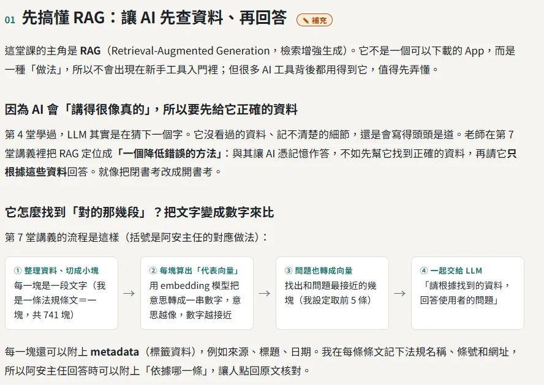
補上後的第 7 堂：「01 先搞懂 RAG」，標題旁有「✎ 補充」標記
03成果
網站目前有第 1～9 堂作品頁、5 頁新手工具入門。第 1～5 堂是我和 AI 一起做的；第 6～8 堂是開新視窗後，AI 只讀 CLAUDE.md 自己做出來的（網站上標紅色 New）。新視窗測試對照老師的檢查清單：
| 檢查項目 | 結果 | 說明 |
|---|---|---|
| 檔名和放的位置對嗎？ | ✅ | lessons/lesson-06～08.html，圖片放在各自的 assets/img/lesson-NN/ |
| 格式跟舊的頁面一樣嗎？ | ✅ | 區塊順序和第 1～5 堂相同：30 秒看懂 → 過程 → 成果 → 心得 → 帶回工作用 |
| 首頁目錄有更新嗎？ | ✅ | 新卡片、技巧篩選、上一篇／下一篇都自動接上 |
| 有沒有動到不該動的檔案？ | ✅ | 只改了規則允許的檔案；其他堂的頁面都沒動 |
| （自己加的）有沒有個資？ | ✅ | 全站搜尋姓名、學號、學校等個資，結果為零 |
CLAUDE.md 各節重點（共 12 節）
| 規則 | 規定什麼 | 為什麼要寫 |
|---|---|---|
| 讀者與目的（1） | 讀者是零基礎的同事；每頁回答「做了什麼、怎麼和 AI 合作、帶回工作用」 | 讀者決定所有寫法 |
| New／補充標記（1.5） | AI 照規則新增的內容一律標 New；我看過後要求改的標 ✎ 補充 | 分得出哪些是 AI 自己做的，方便驗收 |
| 內容來源（2） | 只讀每堂作業資料夾裡的 eeclass 提交內容 PDF 和裡面的雲端連結，不准編造數字 | 本機檔案不一定是最後繳交的版本 |
| 個資保密（3） | 姓名、學號、學校、分數、公司名稱一律不放；含金鑰的檔案不讀 | 網站是公開的 |
| 新增流程（4、5） | 檔案放哪、怎麼命名；新增一堂的 10 個步驟；只能動哪些檔案 | 讓 AI 照步驟做，不亂改舊頁面 |
| 頁面結構與寫法（6、7、8） | 固定區塊順序、專有名詞要加白話解釋、圖片格式 | 每一頁長得一樣，同事好讀 |
| 工具與網站長大（9、9.5、9.6） | 工具標籤講白話；新工具用 5 項標準判斷「值不值得寫」；首頁只能有三區 | 網站變長也不會亂 |
| 自我檢查（11） | 16 項完成前檢查清單，例如個資搜尋結果要為零 | AI 交差前自己先檢查 |
延伸：同一套規則，也能用在其他課程
如果想幫其他課程（例如 Fintech、機器學習）也做一個作品集，只要改兩件事，其他規則都可以直接沿用：
| 要改的 | 其他直接沿用的 |
|---|---|
| ① 網站是給誰看的 | 頁面固定結構、寫作風格、圖片規則 |
| ② 每堂作業的資料放在哪裡 | 新增一堂的 10 個步驟、個資檢查、自我檢查清單、New／補充標記 |
04我的心得
做完最大的感覺就是：真的很方便！CLAUDE.md 寫好後，就算開一個全新的對話，AI 也能很快知道這個專案在做什麼。規則和以往的作業一樣，一開始只有想法，是和 AI 一起邊做邊改才梳理完整的。遇到不如我心意的地方，像是工具清單列得太浮誇、用了同事看不懂的名詞，或是一頁塞了太多事情，我都請 AI 記進 CLAUDE.md，下次生成時它比較不會再犯一樣的錯，我也不用每次都重新講一遍。
測試時我只說了一句話，它就做出三頁風格一致的作品頁，當下覺得很神奇，完全做到了一開頭寫的目標：「讓接手的 AI 不用問任何問題，就能把新一堂作業整理成一頁，而且風格、結構和現有頁面一致」。但仔細看，產出的頁面還是有一些小問題，忍不住想要出手調整 XD。
我後來也發現，只要換一下「要給誰看」和「資料放在哪裡」，CLAUDE.md 應該也能拿來整理其他課程的作品，真是一魚多吃。如果再做一次，我會想多開幾次新對話，看看 AI 自己照著規則生成時還會出現什麼問題；多測幾次，規則應該可以寫得更好，讓 AI 生成的內容一次就達到我的滿分。
💼 帶回工作用
這一堂可以套用到工作上的地方：
- 重複交辦的工作，寫一本「員工手冊」給 AI例如每週的報表摘要、每月的稽核紀錄整理，把格式、資料來源、不能動的地方寫成一份文件，每次開新對話先請 AI 讀它，不用每次重講。
- 交辦前先說清楚三件事要什麼成品、怎麼算做完、有什麼限制。說不清楚的，可以先讓 AI 反問你，把答案寫進手冊。
- AI 做錯時，不只改這一次，也把規則補進去例如 AI 把內部檔名寫進對外文件，除了刪掉，也在手冊加一條「內部檔名不能出現」，下次就不會再犯。
- 用新對話測試手冊夠不夠清楚開一個全新的對話，只說一句話，看 AI 能不能照手冊做對；做錯的地方，就是手冊還沒寫清楚的地方。
- 讓 AI 標出它自己新增的內容像這次的 New 標記，請 AI 把它改過或新增的地方標出來，自己驗收時一眼就知道要看哪裡。